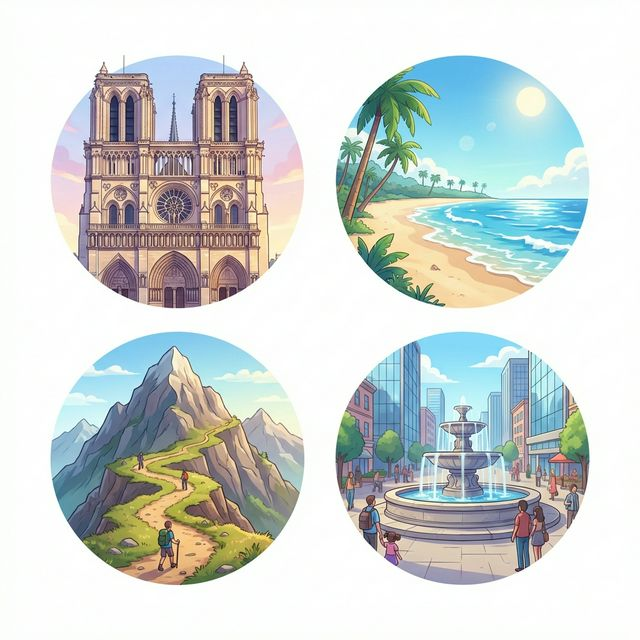
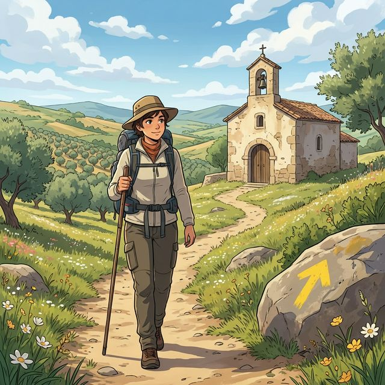

Cervantes: §10 여행 및 숙박 심화: 호텔 예약, 불만 사항 및 §12 지리 및 장소: 자연 경관 및 도시 구조
Explorando nuevos horizontes (새로운 지평을 탐험하다)
A2 단계에서의 여행은 단순히 이동하는 것을 넘어, 현지인과 소통하고 문제를 해결하며 잊지 못할 추억을 만드는 과정입니다. 호텔 체크인 시 요구사항을 정확히 말하거나, 여행 중 발생한 사소한 문제(reclamaciones)를 해결하고, 지난 여행의 감동을 생생하게 묘사할 수 있을까요? 이번 장에서는 숙박 관련 핵심 어휘, 완료 과거(Pretérito Perfecto)를 활용한 경험 공유, 그리고 스페인의 상징적인 여행지인 '산티아고 순례길'에 대해 배웁니다. 여러분의 스페인 여행이 한층 더 깊어질 준비가 되셨나요?
학습 목표
- 호텔 시설, 관광지 및 자연 경관 관련 고급 어휘 15개 이상 습득
- 완료 과거(Haber + 과거분사)를 이용한 여행 경험 묻고 답하기
- 호텔 예약, 체크인 및 서비스 요청 실전 표현
- 산티아고 순례길(Camino de Santiago)의 역사와 문화적 가치 이해
여행을 더욱 풍요롭게 해주는 장소와 시설들입니다. 다양한 풍경이 어우러진 이미지를 보며 어휘를 익혀보세요.

| # | Spanish | English Bridge | Korean Tip |
|---|---|---|---|
| 1 | la recepción | Reception ✅ | 리셉션 / 접수처 |
| 2 | la reserva | Reserve / Reservation ✅ | 예약 |
| 3 | la habitación doble | Double (room) ✅ | 2인실 / 더블룸 |
| 4 | el aire acondicionado | Air Conditioning ✅ | 에어컨 |
| 5 | el monumento | Monument ✅ | 기념물 / 유적 |
| 6 | la catedral | Cathedral ✅ (Perfect Cognate) | 대성당 |
| 7 | la playa | — | 해변 |
| 8 | la montaña | Mountain ✅ | 산 |
| 9 | el paisaje | Passage (landscape view) | 풍경 / 경치 |
| 10 | el turismo cultural | Cultural Tourism ✅ | 문화 관광 |
✅ 표시된 단어는 영어와 어원의 뿌리가 같은 'Cognates'입니다.
호텔과 관광지에서 자신의 의사를 정확히 표현하는 패턴입니다.
A. 호텔에서 (En el Hotel)
- Tengo una reserva a nombre de Kim. (I have a reservation under the name Kim. / 김이라는 이름으로 예약했습니다.)
- ¿Está incluido el desayuno? (Is breakfast included? / 조식이 포함되어 있나요?)
- Quiero una habitación con vistas al mar. (I want a room with sea views. / 바다 전망의 방을 원합니다.)
- No funciona el grifo de la ducha. (The shower tap is not working. / 샤워기 수도꼭지가 고장 났어요.)
B. 여행 경험 말하기 (Experiencias)
- ¿Has visitado alguna vez Madrid? (Have you ever visited Madrid? / 마드리드에 가본 적이 있나요?)
- Sí, he estado allí dos veces. (Yes, I have been there twice. / 네, 거기 두 번 가봤어요.)
- Nunca he viajado en crucero. (I have never traveled on a cruise. / 크루즈 여행은 한 번도 안 해봤어요.)
- Lo que más me ha gustado es la comida. (What I liked most is the food. / 가장 좋았던 것은 음식이에요.)
과거의 경험을 현재와 연결해 말하는 완료 과거를 공략해 봅시다.
현재와 가까운 과거 혹은 시점이 정해지지 않은 경험을 말할 때 씁니다. (영어의 Present Perfect와 유사)
구조: Haber 동사의 현재형 + 과거분사(-ado / -ido)
| 인칭 | Haber | 과거분사 (예: viajar / comer) |
|---|---|---|
| Yo | he | viajado / comido |
| Tú | has | viajado / comido |
| Él/Ella/Ud. | ha | viajado / comido |
| Nosotros/as | hemos | viajado / comido |
| Vosotros/as | habéis | viajado / comido |
| Ellos/Ellas/Uds. | han | viajado / comido |
부사와의 결합:
- Ya: 이미 (Ya he hecho la maleta.)
- Todavía no: 아직 ~않다 (Todavía no he visitado la Alhambra.)
- Alguna vez: 언젠가/한 번이라도 (¿Has comido paella alguna vez?)
스페인을 가장 깊게 만나는 방법, 순례길을 알아봅시다.

El Camino de Santiago es una de las rutas de peregrinación más antiguas y famosas de Europa. Miles de personas de todo el mundo recorren a pie o en bicicleta cientos de kilómetros para llegar a la Catedral de Santiago de Compostela, donde se dice que está la tumba del apóstol Santiago.
No es solo un viaje religioso; para muchos es una experiencia de introspección, deporte y cultura. El símbolo más conocido es la concha de vieira y la flecha amarilla가 길을 안내합니다. A lo largo del camino, los peregrinos duermen en albergues (hostels) y comparten sus historias. Es el lugar perfecto para practicar español con gente de todas partes mientras disfrutas de los paisajes verdes del norte de España (Galicia). ¡Buen camino!
[한국어 번역]
산티아고 순례길은 유럽에서 가장 오래되고 유명한 순례길 중 하나입니다. 전 세계에서 온 수만 명의 사람들이 사도 야고보의 무덤이 있다고 전해지는 산티아고 데 콤포스텔라 대성당에 도착하기 위해 수백 킬로미터를 걷거나 자전거를 탑니다.
이곳은 단순히 종교적인 여행만이 아닙니다. 많은 이들에게 자기 성찰, 스포츠, 그리고 문화적 경험의 장입니다. 가장 잘 알려진 상징은 조개껍데기와 길을 안내하는 노란 화살표입니다. 길을 따라 순례자들은 알베르게(호스텔)에서 잠을 자며 서로의 이야기를 공유합니다. 스페인 북부(갈리시아)의 초록빛 풍경을 즐기며 곳곳에서 온 사람들과 스페인어를 연습하기에 완벽한 장소입니다. "부엔 까미노!" (좋은 길 되세요!)
A. Select the appropriate hotel facility (알맞은 호텔 시설을 선택하세요)
| Description | Facility |
|---|---|
| 1. Where you check in | a. El aire acondicionado |
| 2. A room for one person | b. El gimnasio |
| 3. To cool the room | c. La recepción |
| 4. Where you do exercise | d. La habitación individual |
| 5. To save your money/passport | e. la caja fuerte (금고) |
B. 완료 과거 변형 연습 (괄호 안의 동사를 완료 과거 형태로 바꾸세요)
C. 번역 연습 (완료 과거 및 여행 표현을 활용하세요)
Una experiencia inolvidable (잊을 수 없는 경험)
¡Hola! Soy Diego. Este año he hecho algo increíble: he recorrido parte del Camino de Santiago. He empezado en León y he caminado durante diez días. ¡Ha sido duro pero maravilloso! He conocido a personas de Alemania, Brasil와 일본에서 온 사람들도 만났습니다. Hemos hablado mucho en español y en inglés. Lo que más me ha gustado ha sido el paisaje verde de Galicia y la comida de los pueblos. Nunca he comido un pulpo (문어) tan rico. Ya he llegado a la Catedral de Santiago y me siento muy feliz. He tomado muchas fotos y voy a compartirlas en mis redes sociales. Todavía no he planeado mi próximo viaje, 하지만 seguro que voy a volver a España pronto.
Questions:
1. Diego는 며칠 동안 걸었나요? (How many days did Diego walk?)
- ............................................................
2. Diego가 가장 좋아했던 것은 무엇인가요? (What did Diego like most?)
- ............................................................
[한국어 번역]
안녕하세요! 저는 디에고입니다. 올해 저는 대단한 일을 했어요. 산티아고 순례길의 일부를 완주했습니다. 레온에서 시작해서 10일 동안 걸었습니다. 힘들었지만 경이로웠어요! 독일, 브라질, 일본에서 온 사람들을 만났습니다. 우리는 스페인어와 영어로 이야기를 많이 나눴어요. 가장 좋았던 것은 갈리시아의 초록색 풍경과 마을의 음식이었습니다. 그렇게 맛있는 문어는 처음 먹어봤어요. 저는 이미 산티아고 대성당에 도착했고 정말 행복합니다. 사진을 많이 찍어서 제 소셜 미디어에 공유할 예정이에요. 아직 다음 여행 계획은 세우지 않았지만, 조만간 꼭 스페인에 다시 돌아올 거예요.
Un problema en la habitación (방 안의 문제)
Situación: Lucía llama a recepción porque tiene problemas con su habitación en el hotel.
상황: 루시아가 호텔 방의 문제 때문에 리셉션에 전화합니다.
| Spanish | Korean |
|---|---|
| Recepcionista: ¿Diga? Recepción, buenas tardes. | 리셉션 직원: 여보세요? 리셉션입니다, 안녕하세요. |
| Lucía: Hola, llamo de la habitación 305. Tengo un problema. | 루시아: 안녕하세요, 305호인데요. 문제가 좀 있습니다. |
| Recepcionista: Dígame, ¿qué ocurre? | 리셉션 직원: 말씀하세요, 무슨 일인가요? |
| Lucía: El aire acondicionado no funciona y hace mucho calor. | 루시아: 에어컨이 작동하지 않아서 너무 더워요. |
| Recepcionista: Lo siento mucho. ¿Ha probado a encenderlo con el mando? | 리셉션 직원: 죄송합니다. 리모컨으로 켜보셨나요? |
| Lucía: Sí, lo he hecho, 하지만 no pasa nada. | 루시아: 네, 해봤는데 아무 반응이 없어요. |
| Recepcionista: Entiendo. Envío a un técnico ahora mismo. | 리셉션 직원: 알겠습니다. 지금 바로 기술자를 보내드릴게요. |
이번 장의 핵심 내용을 복습해 보세요.
- [ ] 여행 심화 및 숙박 관련 어휘 10개 이상을 알고 있나요?
- [ ] 완료 과거(Pretérito Perfecto)의 변화와 용법을 이해했나요?
- [ ] 호텔 예약 및 서비스 요청 시 필요한 표현들을 익혔나요?
- [ ] 산티아고 순례길이 갖는 문화적 의미를 이해했나요?
¡Enhorabuena! 이번 장을 통해 여러분은 스페인어로 자신의 경험을 공유하고 실제 여행 상황에서 문제를 해결하는 능력을 갖추게 되었습니다. 완료 과거를 사용하면서 여러분의 이야기는 더욱 풍성해졌고, 호텔 에티켓을 통해 더욱 매너 있는 여행자가 되었습니다. 언어는 목적지가 아니라 그 과정 자체가 즐거운 여행입니다. 다음 장에서는 우리의 하루를 더욱 생동감 있게 만들어 줄 '일과, 가사와 건강(A2)' 섹션으로 이어가겠습니다. ¡Buen camino en tu aprendizaje!
6. Práctica - A. Select the appropriate hotel facility
1-c / 2-d / 3-a / 4-b / 5-e
6. Práctica - B. 완료 과거 변형 연습
1. he viajado / 2. has perdido / 3. hemos dormido / 4. ha hecho / 5. habéis ido
6. Práctica - C. 번역 연습
1. Ya he hecho la reserva del hotel.
2. ¿Has visto la Catedral de Santiago alguna vez?
3. Todavía no hemos ido a ese museo.
4. ¿Está incluido el desayuno?
5. Lo que más me ha gustado es el paisaje de la playa.
7. Lectura Questions
1. 10일 (Diez días).
2. 갈리시아의 초록색 풍경과 마을의 음식 (El paisaje verde de Galicia y la comida de los pueblos).